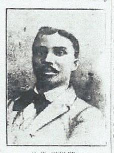
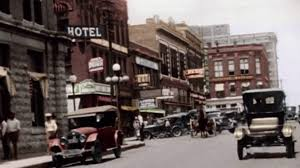
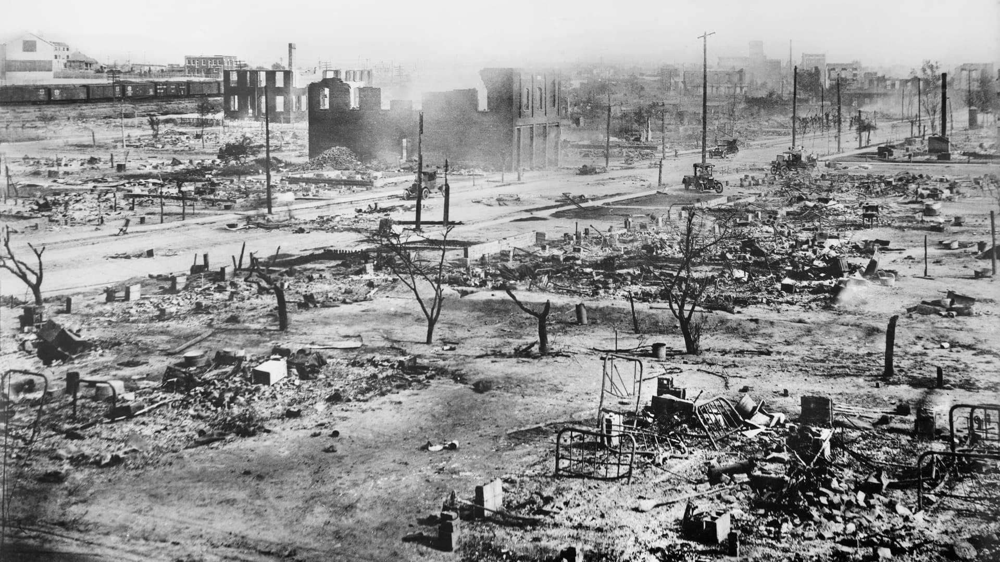
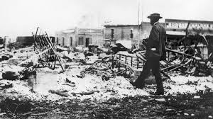

At the turn of the 20th century, the Greenwood District of Tulsa, Oklahoma, was more than 35 city blocks of thriving shops, hotels, theaters and more. And all of them were Black-owned.
The district was founded by Black men and women – many of whom were descendants of slaves – and it became known as Black Wall Street.
Greenwood was home to doctors, lawyers and entrepreneurs. For years, it was a beacon for African-Americans looking to escape the discrimination and violence of the Jim Crow South and live a peaceful and safe life.

It all started with 40 acres and a grocery store.
Ottawa W. Gurley, better known as O.W. Gurley, was one of Tulsa’s earliest settlers. Gurley, traveled to the oil rich city of Tulsa in 1905 from Arkansas and purchased 40 acres of land, on which he built the People’s Grocery Store and a one-story rooming house.
Gurley’s grocery store and rooming house set the stage for the boom in Black entrepreneurial businesses that would follow. Greenwood was soon filled with restaurants, hotels, billiard halls, shoe stores, tailor shops and more.

The district’s enterprising residents built their businesses for Black people, who were often barred or treated poorly in the nearby White establishments.
Stringent segregation laws had gone into effect after Oklahoma became a state in 1907. This paved the way for Greenwood to become an insular hub for the Black dollar to circulate, historians say. Many of the Black residents earned and spent their money entirely within the confines of Greenwood. The result was one of the most affluent and wealthiest African-American enclaves in the country.

At the time of the massacre, Greenwood was considered by many to be the wealthiest Black enclave in the nation. As the seven photos above show, it wasn't uncommon to see its residents stylishly dressed. Some boasted new luxury motorcars.
The incident began on the morning of May 30, 1921, after a young Black man named Dick Rowland, who worked shining shoes, rode the elevator of Tulsa's Drexel building to use one of the few available segregated public restrooms downtown. After the female elevator operator screamed, Rowland fled the elevator and rumors quickly spread of an alleged sexual assault. The next day, he was arrested, leading to an armed confrontation outside the courthouse between a growing white crowd and Black men hoping to defend Rowland from being lynched. As things became heated and shots were fired, the vastly outnumbered African Americans retreated to the Greenwood district. The white group followed, and as the night unfolded, violence exploded.

Throughout that night and into June 1, much of Greenwood became enveloped in billowing dark smoke, as members of the mob went from house to house and store to store, looting and then torching buildings. Fleeing residents were sometimes shot down in the streets. Many survivors report low-flying planes, some raining down bullets or inflammables.